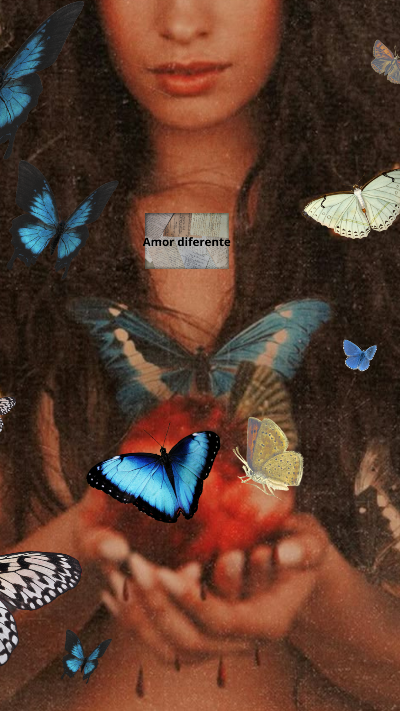

ROMANCE
"Honestamente, este último año y medio fue la primera vez que realmente experimenté lo que es enamorarme de otra persona. Creo que hay mucha más profundidad en el amor cuando sabes que estás viviéndolo con alguien más. Tienes mucho más que decir... He amado a personas desde la distancia, enamorarme de alguien y tener sentimientos por él sin que lo sepa... Es diferente."
